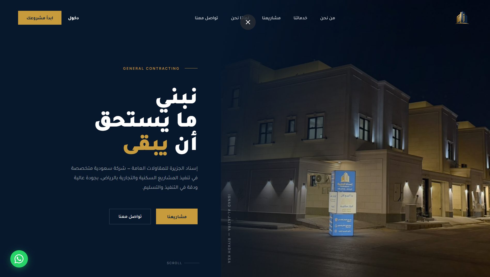
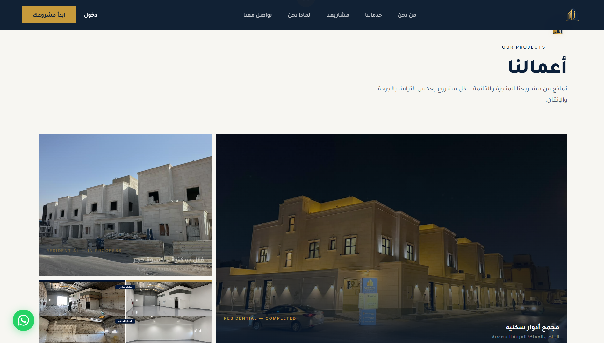
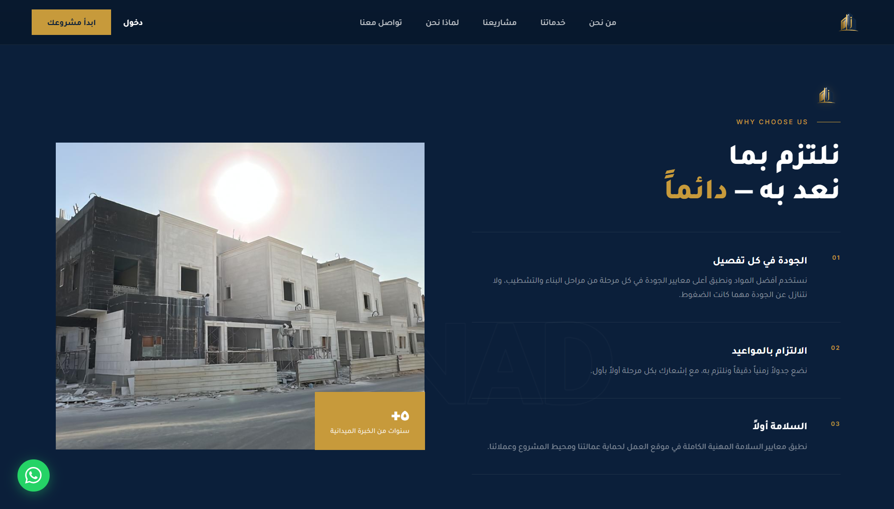

ISNAD AL-JAZIRA
شركة إسناد الجزيرة للمقاولات العامة والتشييد

التحدي
في سوق المقاولات والإنشاءات الكبرى بالمملكة، يواجه المطورون والمستثمرون العقاريون صعوبة في التمييز بين الشركات التي تمتلك سجلاً تنفيذياً حقيقياً وتلك التي تعتمد على صور دعائية عامة. كان التحدي يكمن في إبراز الإمكانيات الميدانية الضخمة لشركة إسناد الجزيرة، وعرض مشاريعها المنجزة (مثل مجمعات الأدوار السكنية والفلل المكسوة بالحجر) بدقة وشفافية كاملة، مع تسليط الضوء على قدرات الترميم الميداني وإعادة التأهيل للمستودعات والمنشآت.
الفكرة والمنهج
اعتماد لغة بصرية سينمائية داكنة (Cinematic Architectural Dark Mode) تعكس صلابة وفخامة المنشآت العمرانية ليلاً، مدعومة بلمسات ذهبية راقية ترمز للثقة والريادة. تم تصميم الواجهة لتركز على الدليل البصري الواقعي (Visual Proof) من خلال استعراض صور حية من مواقع العمل الفعلية، ودمج مقاطع المقارنة (قبل وبعد الترميم) التي تبرهن للعميل حجم التحول المعماري الذي تصنعه الشركة.
بناء التجربة ومعرض المشاريع
تم بناء مسار التصفح ليعكس هيبة الصروح المعمارية، مع تنظيم معرض المشاريع في مسارات واضحة: المشاريع المكتملة (مجمع الأدوار السكنية بالرياض)، المشاريع قيد التنفيذ (الفلل السكنية بكسوة الحجر الطبيعي)، ومشاريع إعادة تأهيل المستودعات والمنشآت الصناعية. كما تم توفير نظام اتصال فوري ومباشر يشمل استمارة طلب استشارة فنية وزر واتساب مباشر.

الاتجاه البصري ومنهجية العمل
توازن بصري متقن بين الكحلي الليلي العميق ودرجات الحجر الطبيعي والذهبي المعماري. تم صياغة منهجية عمل واضحة من أربع مراحل (الدراسة والتخطيط، التنفيذ بدقة، الإشراف والمتابعة الميدانية، والتسليم مع الضمان الشامل)، مما يمنح المستثمرين وضوحاً كاملاً لمراحل تدفق المشروع.

العقبات والحلول
أثناء التصميم وتطوير المنصة، واجهتنا عقبات رئيسية وتم التغلب عليها كالتالي:
صعوبة إثبات جودة الترميمات وإعادة التأهيل رقمياً
يصعب نقل حجم التغير الحقيقي الذي يحدث للمنشآت والمستودعات القديمة عبر الصور الثابتة العادية دون إظهار الحالة الابتدائية قبل العمل.
دمج وثائق بصرية ومقارنات دقيقة (قبل وبعد)
استعراض لقطات مقارنة تفصيلية للمستودعات والمنشآت قبل الترميم وبعده، لتوضيح حجم الإنجاز الميداني الدقيق في معالجة الجدران والأرضيات والأسقف.
ترسيخ موثوقية الشركة لدى المطورين وأصحاب المشاريع الكبرى
تخوف العملاء من التأخير في المواعيد أو التهاون في إجراءات الأمن والسلامة في المواقع الإنشائية الحية.
إبراز معايير السلامة والجودة والالتزام الزمني الصارم
تخصيص مساحات بارزة لتسليط الضوء على مبادئ العمل الثلاثة (الجودة في كل تفصيل، الالتزام الصارم بالمواعيد، والسلامة أولاً) مع توثيق سنوات الخبرة الميدانية في الرياض.
النتيجة
بناء منصة رقمية معمارية رصينة تليق بمكانة إسناد الجزيرة كشريك بناء وتشييد رئيسي في الرياض، مما رسخ علامتها التجارية لدى المستثمرين وزاد من طلبات عروض أسعار المشاريع السكنية والتجارية.